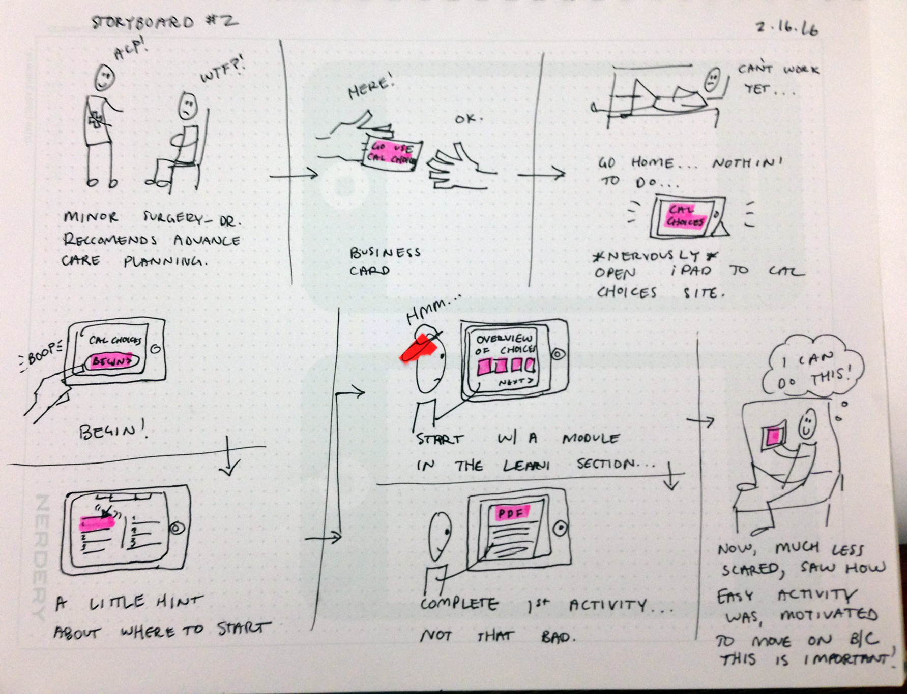

18 Feb 2016
Storyboards


Storyboarding:
Since Cal Choices is divided into a lot of different sections, storyboarding was difficult to begin—did I storyboard
how the app was to be delivered to a user, how a user went through a specific section (like the CPR test), or how the user
felt when he or she was finished using Cal Choices? I supposed it wouldn't be a bad idea to do a bunch of storyboards
representing all the situations listed above (and more), but I also felt analysis paralysis kicking in. It was good to "just do it"
and only spend a few minutes on one storyboard.
As for my storyboards:
My first partner commented on my tutorial, suggesting I look at video game UI. I thought that was a great idea, so I wouldn't have
to frontload so much information to the user. Then, when I got home, I remembered that in my focus group, the nursing professionals
actually wanted more information frontloaded so the user had a better idea of what they were doing. Classic "I have to find a balance"
type of thing. My second partner tried to figure out what was going on in my storyboard without me telling her what it was about first,
and she analyzed it surprisingly well. I thought both of our storyboards represented the context and situations quite well, but not very
specific tasks (not really enough time to get into detail). I'd like to follow up and see what a textbook or has to say about storyboarding,
because I think it's quite useful for unblocking the brain.
11 Feb 2016
CPR Knowledge Test
My working process:
These sketches have developed over a few months. I've been working on how to educate users about CPR
in an alternative way (rather than just reading information). A short "quiz" emphasizing new and possibly
surpising information was the solution.
What I learned:
I spent the weekend with two developers, and both had lots of interesting things to say about libraries. One developer
had used them for a long time on the website he works for, but ultimately the company decided to rid of the library
to both trim the code and write their own custom code. I found that most of the simple things I wanted to
didn't require using a library at all—I don't think I was thinking big enough! That being said, the jQuery UI library
seems useful for adding widgets or effects really fast.
04 Feb 2016
Who the F*ck is Patrice?

How I connected my UX with my UI
There are only seven things to click on this page, so I have a bit of
room to include dynamic visuals and interaction. Everything is the same visual style, but visuals change
subtly as one moves through the site. For example, the buttons change color, and the images in the pop-outs
become full images instead of the cropped versions in the buttons. The bag image is also different than the rest
of the buttons, suggesting that it's more important than the rest (it is).
28 Jan 2016
Patrice's Zen-o-Meter
Why this is so attractive:
Because it's Buddha with an afro, homies.
Why this is so effective:
This exercise uses many, many principles of effective information design. Also, I'm a
super interesting person.
19 Jan 2016
Goodreads Form
Priority:
Do the elements have a hierarchy? Typographically, this form doesn't have much of a hierarchy (why are there two fonts?).
The hierarchy mostly comes from dividing lines that separate sections. The size of text fields could arguably
denote hierarchy as well; the field for a reader's review is gigantic compared to the other fields. The yellow
rating stars also stand out.
Clarity:
Does the interface communicate clearly? On the whole, I think so. I've never had a problem understanding this form.
With a few small improvements (perhaps make "Delete Review" red and "Post to Blog" green) the form would be even
more clear. The light gray text is difficult to read on a white background. I think this form would benefit from
using only one typeface as well.
Purpose:
Does the product maintain its essence? Absolutely. Goodreads is like Yelp for books, and this form captures two
very important features: the reader's rating and review. The form gives the user plenty of room to write, too, suggesting
that the user's opinion is very damn important.
07 Jan 2016
Yamaha HTR-5740 AV Receiver
Visual Design:
This receiver will not be winning any product design awards, in my opinion.
The text is set in all caps, and the size of the text is miniscule even for my young eyes.
I would expect my father to be grumbling while he unearths a pair of strong reading glasses just
so he can figure out which button he is pushing. Perhaps the text labels would be more effective if
set in a different typeface (maybe Helvetica Neue or something else that works well at small sizes)
in lower or title case. I don't mind the black buttons, but I would personally have designed a bit
more contrast into the "power" button. The "power" button is black, like all the other buttons,
and has the same "feel" when pressed as all the other buttons. I would have made the power button a different
color, and incorporated some other indication that it's different from the other buttons.
Appeal:
This receiver is not sexy. Perhaps it is sexy to an electronic music guru or someone who spends time steeped
in the recording arts. For the average person who wants an average receiver, this interface, at first glance,
appears intimidating and technical because of the ambiguously labeled controls (it's almost like the interface
expects the user to be an expert) and the lack of readily available instruction "in the world". The receiver
almost looks somber because of how black it is.
Effectiveness:
Not very. Figuring out what each control is used for requires a careful study of the receiver's manual, instead
of simply looking at the control labels. For example, one button is ambiguously labeled "A/B/C/D/E". Like many
amps and receivers, the modes, meant to simplify the control of multiple devices, in fact complicate operations
more than necessary. To use this receiver properly is simply too time consuming. I've had the receiver for five
years, and I still turn it to "DVD" mode to play a vinyl record.